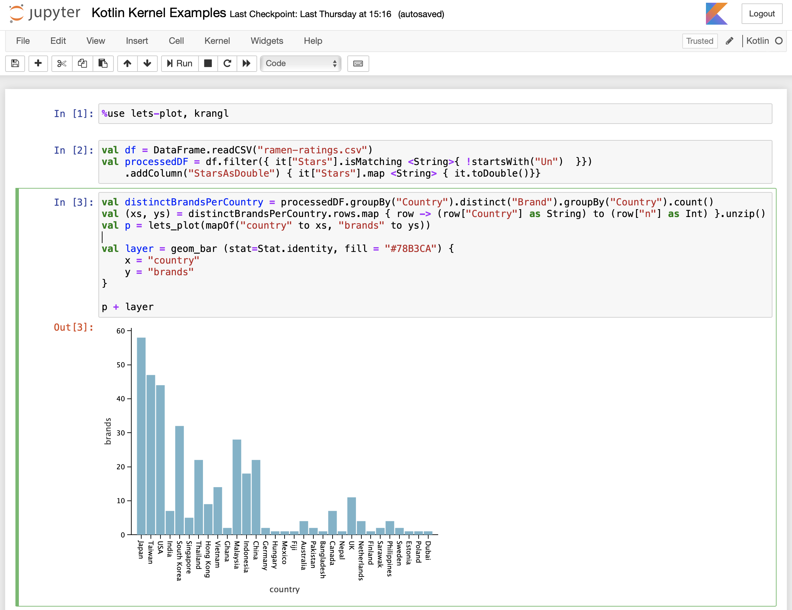
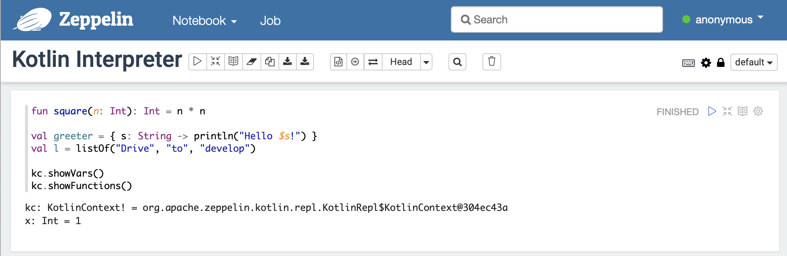

type: doc layout: reference category: "Introduction"
title: "Kotlin 用于数据科学"
Kotlin 用于数据科学
从构建数据流水线到生产机器学习模型， Kotlin 可能是处理数据的绝佳选择：
- Kotlin 简洁、易读且易于学习。
- 静态类型与空安全有助于创建可靠的、可维护的、易于故障排除的代码。
- 作为一种 JVM 语言，Kotlin 提供了出色的性能表现， 并具有充分利用久经考验的 Java 库的整个生态系统的能力。
交互式编辑器
Jupyter Notebook 与 Apache Zeppelin 等笔记本为数据可视化与探索性研究提供了方便的工具。 Kotlin 与这些工具集成在一起，可以帮助探索数据、与同事共享发现或建立数据科学和机器学习技能。
Jupyter Kotlin 内核
Jupyter Notebook 是一个开源 Web 应用程序， 它允许创建与共享包含代码、可视化与标记文本的文档（也称为“笔记本”）。 Kotlin-jupyter 是一个开源项目， 它为 Jupyter Notebook 带来了 Kotlin 支持。

查看 Kotlin 内核的 GitHub 仓库 以获取安装说明、文档与示例。
Zeppelin Kotlin 解释器
Apache Zeppelin 是一种流行的基于 Web 的交互式数据分析解决方案。 它为 Apache Spark 集群计算系统提供了强大的支持， 这对数据工程特别有用。 从版本 0.9.0 开始，Apache Zeppelin 内置了 Kotlin 解释器。

类库
Kotlin 社区创建的用于数据相关任务的类库生态系统正在迅速扩展。 以下是一些可能会有用的库：
Kotlin 库
KotlinDL is a high-level Deep Learning API written in Kotlin and inspired by Keras. It offers simple APIs for training deep learning models from scratch, importing existing Keras models for inference, and leveraging transfer learning for tweaking existing pre-trained models to your tasks.
Kotlin for Apache Spark adds a missing layer of compatibility between Kotlin and Apache Spark. It allows Kotlin developers to use familiar language features such as data classes, and lambda expressions as simple expressions in curly braces or method references.
kotlin-statistics 是一个为探索性统计与生产统计中提供扩展函数的库。它支持基本的数字列表/序列/数组函数（从
sum到skewness）、 切片操作符（诸如countBy、simpleRegressionBy）、分箱（binning）操作符、离散 PDF 采样、 朴素贝叶斯分类器、聚类、线性回归等等。kmath 是一个受 NumPy 启发的库。 这个库支持代数结构与运算、类数组结构、数学表达式、直方图、 流运算、commons-math 与 koma 的包装等等。
krangl 是一个受 R 语言的 dplyr 与 Python 的 pandas 启发的库。这个库提供了采用函数式风格 API 进行数据操作的功能；它还包括过滤、转换、聚合与重塑表格数据的函数。
lets-plot 是一个用 Kotlin 编写的统计数据绘图库。 Lets-Plot 是多平台的，不仅可以用于 JVM，还可以用于 JS 与 Python。
Java 库
因为 Kotlin 提供了与 Java 互操作的头等支持，所以也可以在用于数据科学的 Kotlin 代码中使用 Java 库。 以下是这些库的一些示例：
DeepLearning4J——一个 Java 深度学习库
ND4J——用于 JVM 的高效矩阵数学库
Dex——一个基于 Java 的数据可视化工具
Smile——一个全面的机器学习、自然语言处理、线性代数、图、插值与可视化系统。除了 Java API，Smile 还提供了函数式的 Kotlin API 以及 Scala 与 Clojure API。
- Smile-NLP-kt——以 Kotlin 扩展函数与接口格式重写了 Smile 的自然语言处理部分的 Scala 隐式内容。
Apache Commons Math——一个 Java 通用数学、统计与机器学习库
OptaPlanner——一个用于优化规划问题的求解器实用程序
Charts——一个正在开发中的科学 JavaFX 图表库
CoreNLP——一个自然语言处理工具包
Apache Mahout——一个回归、聚类与推荐的分布式框架
Weka——一组用于数据挖掘任务的机器学习算法
如果这个列表还不能满足需求，可以在 Thomas Nield 的 Kotlin 数据科学资源摘要中找到更多选项。